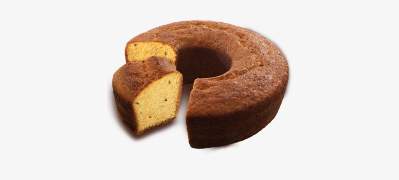

Receita de bolo simples
Ingredientes
2 xícaras (chá) de açúcar
3 xícaras (chá) de farinha de trigo
4 colheres (sopa) de margarina
3 ovos
1 e 1/2 xícara (chá) de leite
1 colher (sopa) bem cheia de fermento em pó
Modo de preparo
- Bata as claras em neve e reserve.
- Misture as gemas, a margarina e o açúcar até obter uma massa homogênea.
- Acrescente o leite e a farinha de trigo aos poucos, sem parar de bater.
- Por último, adicione as claras em neve e o fermento.
- Despeje a massa em uma forma grande de furo central untada e enfarinhada.
- Asse em forno médio 180 °C, preaquecido, por aproximadamente 40 minutos ou ao
furar o bolo com um garfo, este saia limpo.
Dicas para sua receita de bolo simples
Separe os ingredientes antes de começar a receita. Parece besteira, mas esse é um passo muito importante no preparo de qualquer receita. Já pensou, no meio do processo, se dar conta de que não há ovos suficientes para aquele prato? Ou perceber que um determinado ingrediente venceu? Nós não queremos desistir no meio do caminho, certo?Ingredientes na mesma temperatura
Com exceção de receitas que pedem ingredientes gelados, é muito importante que todos os itens estejam na mesma temperatura. Facilita muito na hora de misturar a massa e contribui pra que o bolo asse de forma igual. Ah, você não precisa deixar itens de geladeira por horas do lado de fora, principalmente se mora numa cidade muito quente. Uns 30 minutos é tempo suficiente.Meça corretamente os ingredientes
Na confeitaria, é fundamental que a gente respeite as medidas de cada ingrediente. Use xícaras e colheres medidoras pra te ajudar nesse processo. Em alguns casos, pode ser necessário usar uma balança de cozinha (que hoje em dia é super acessível). No caso de ingredientes secos, você pode usar uma faca para “raspar” o excesso na xícara.Peneire os itens secos
Parece bobagem, mas não é. Ao peneirar ingredientes secos como farinha, açúcar e até mesmo o fermento, você acrescenta ar à sua massa, deixando o bolo mais fofo. Sem falar que ao peneirar você também remove possíveis grãozinhos mais duros da farinha.Use amido de milho nas receitas
A cada 2 xícaras de farinha de trigo, troque ½ xícara de farinha por amido de milho (maisena). Por ser um ingrediente mais leve, transfere ao bolo essa característica também.Bata claras em neve
Algumas receitas sugerem que você bata as claras em neve e, de fato, seguir essa recomendação faz toda a diferença no processo final. Elas estarão no ponto quando ao virar a vasilha de cabeça pra baixo, as claras permanecerem firmes sem cair. Uma dica: incorpore as claras sempre no final da receita, mexendo delicadamente do centro pra cima, com uma espátula, sem bater.Confira a validade do seu fermento
Você sabia que, mesmo na validade, o fermento pode envelhecer e ficar impróprio para uso? Por isso, faça sempre o teste antes de começar a receita: pegue 1/2 colher de chá e despeje em um copo d’água. Se não borbulhar, infelizmente, o fermento partiu dessa pra uma melhor.Não bata a farinha nem o fermento
Muita gente pensa que pra ter um bolo fofinho é preciso bater bastante a massa, principalmente na hora de acrescentar a farinha. Não faça isso! O ideal é, além de peneirá-la o ingrediente aos poucos, misturando delicadamente com uma espátula. Seja um bolo de liquidificador, feito na batedeira ou mão, não bata a farinha e muito menos o fermento.
Forno e temperatura
Para assar um bolo simples, você não vai levar mais do que 15 a 20 minutos no preparo da massa. Esse é o tempo necessário para pré aquecer o forno. Esse passo é muito importante pra que seu bolo asse de forma correta e sem risco de solar.